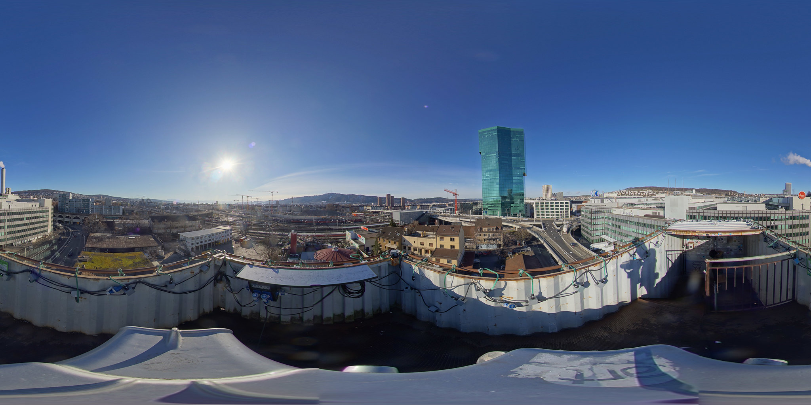

You’re proud of what you’ve written but you worry you have strained relationships with the fossil fuel industry and thus invoked a lot of backlash.
Double down by showcasing international success stories of countries thriving after transitioning to renewable energy.
Mitigate the backlash by publishing a series of articles on the potential for job creation in the renewable energy sector, aiming to balance the narrative.